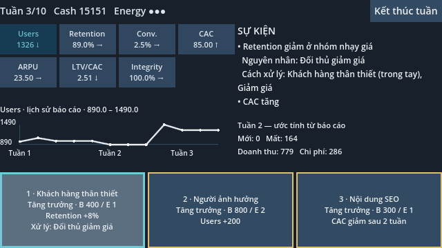

Dữ liệu có thể sai
Khi Data Integrity giảm, các chỉ số trên dashboard bị nhiễu. Có lúc một chỉ số trông rất xấu chỉ vì dữ liệu lỗi, không phải vì công ty có vấn đề.
Đang phát triển. Chưa phát hành.
Data Corp là game chiến thuật nhẹ: bạn là Lead Data Analyst của một startup sắp cạn tiền. Mỗi tuần, bạn đọc dashboard, tìm nguyên nhân gốc của vấn đề và chọn thẻ hành động. Nhưng số liệu bạn thấy không phải lúc nào cũng đúng.
Xem gameplay
Khi Data Integrity giảm, các chỉ số trên dashboard bị nhiễu. Có lúc một chỉ số trông rất xấu chỉ vì dữ liệu lỗi, không phải vì công ty có vấn đề.
Retention tụt có thể do lỗi ứng dụng, đối thủ giảm giá hoặc log trùng. Thẻ phân tích giúp lộ nguyên nhân, và mỗi nguyên nhân cần một cách xử lý khác nhau.
10 tuần
theo bản demo hiện tại12 thẻ
theo bản demo hiện tại8 sự kiện
theo bản demo hiện tại7 chỉ số
theo bản demo hiện tạiChưa mở đăng ký. Liên kết trang phát hành sẽ đặt ở đây khi có.